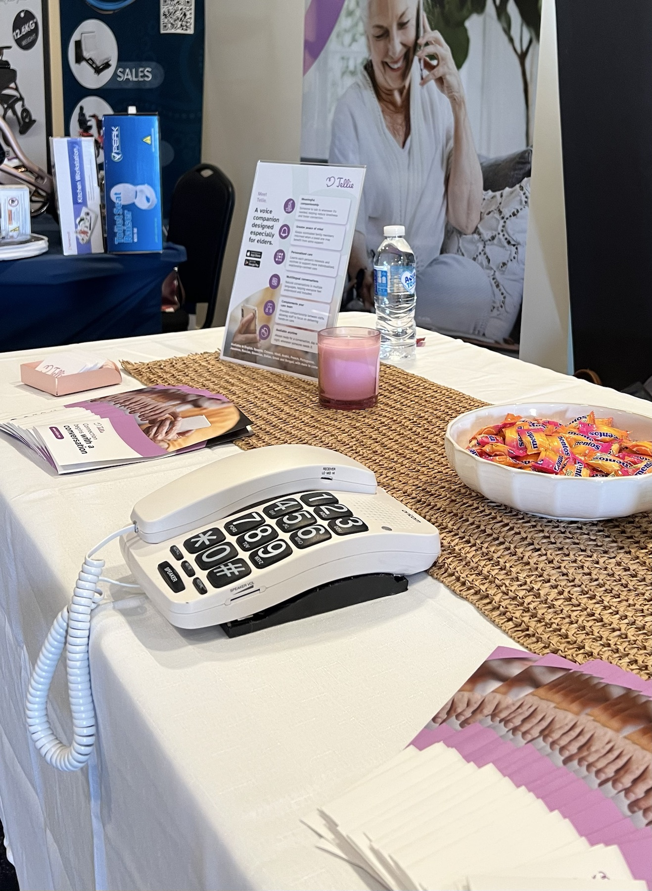
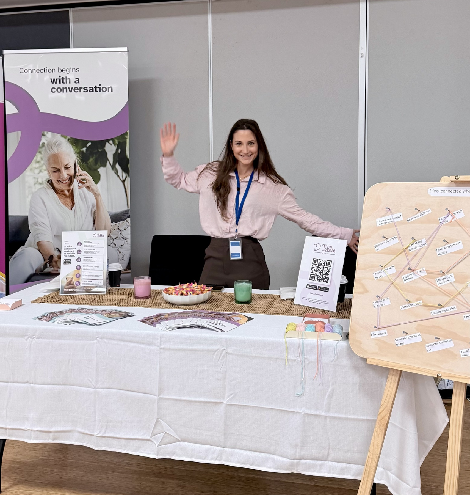

For aged care and communities
Connection begins with a conversation.
Tellie helps older adults feel heard—and helps aged-care providers and councils understand what could support a more connected life.
Voice-first10+ languagesSenior-first

The problem
Too many older adults are living without enough meaningful connection.
Loneliness affects wellbeing, confidence and health. Yet the people responsible for supporting connection do not always know who needs it, what matters to them or what may help.
How Tellie works
Conversation that can lead to better-timed human support.
Tellie makes advanced technology feel familiar to an older adult, then turns permissioned signals into practical understanding.
A familiar conversation
Older adults speak or type with Tellie as naturally as making a phone call.
Relevant signals
Tellie organises permissioned insights around mood, interests, connection and participation.
Actionable understanding
Providers and councils can see patterns that help them respond more meaningfully.

Designed around familiarity
Meet older adults where they are technologically.
This generation already knows how to make a phone call. Tellie begins there—using clear controls, voice-first interaction and accessibility settings instead of asking the person to learn a new digital behaviour.
- Warm voice and text conversations
- Conversation memory and personalised responses
- Cognitive games, reminders and light web search
- Configurable support-contact alerts
Two partner pathways
One conversation. Different ways to create connection.
Aged-care providers
Know what your residents need.
Offer residents familiar companionship while helping teams understand interests, connection needs and opportunities for more personalised support.
- Tellie access for residents
- Privacy-safe residential insights
- Family Connect experience
- Facility-wide and multi-site rollout
Councils
Know what your community needs.
Make Tellie available through a council-branded program and understand loneliness, participation, interests and barriers to community connection.
- Accessible community companionship
- Proactive local activity suggestions
- Participation and loneliness measurement
- Privacy-safe program reporting
From individual needs to shared understanding
See what conversation can uncover.
Tellie does not give organisations private conversation transcripts. It presents relevant, permissioned and privacy-safe insights designed to support better decisions.

Pilot with Tellie
Move from a defined cohort to a confident scale decision.
A structured pilot helps your organisation understand resident or community adoption, loneliness, connection, engagement and operational value.
- 1DiscoverAgree on the cohort, needs and outcomes.
- 2ConfigurePrepare Tellie and the relevant portal.
- 3PilotActivate participants with guided support.
- 4EvaluateReview evidence and plan wider rollout.
Tellie today
Built, in use and ready for structured validation.
Tellie is already moving beyond an idea through product use, community exposure and active partner conversations.



Founder & company
Technology built around people.
Tellie was founded by software engineer Micaela Piacenza, combining firsthand understanding of distance, ageing and loneliness with the ability to turn that insight into a working product.
Micaela is building Tellie through direct learning with older adults, communities, aged-care providers, councils and specialists across technology, privacy, data and commercial growth.
Frequently asked questions
What partners usually want to know.
Does Tellie replace human connection?
No. Tellie provides companionship when people cannot always be present and helps identify opportunities for better-timed human connection.
How does Tellie protect privacy?
Organisations receive relevant, permissioned insights—not private conversation transcripts. Pilot configuration defines access, consent and reporting boundaries.
What can a pilot measure?
Measures can include adoption, engagement, loneliness, connection, activity participation, barriers to participation and partner-specific operational outcomes.
Can Tellie scale beyond one pilot site?
Yes. Pilot planning includes the pathway to facility-wide access, multi-site provider rollout or broader council community programs.
Is Tellie a medical or emergency service?
No. Tellie is currently an entertainment and companionship product. It does not diagnose, treat or replace clinical care or emergency services.
Partner with Tellie
Could Tellie strengthen connection in your residence or community?
Let’s explore what a focused pilot could look like for your organisation.